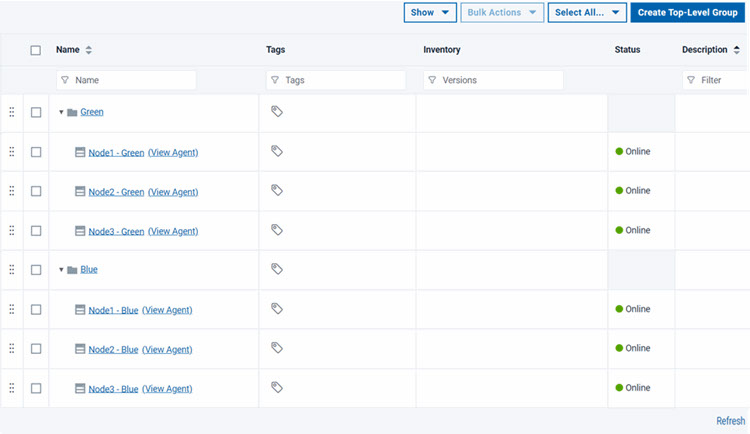
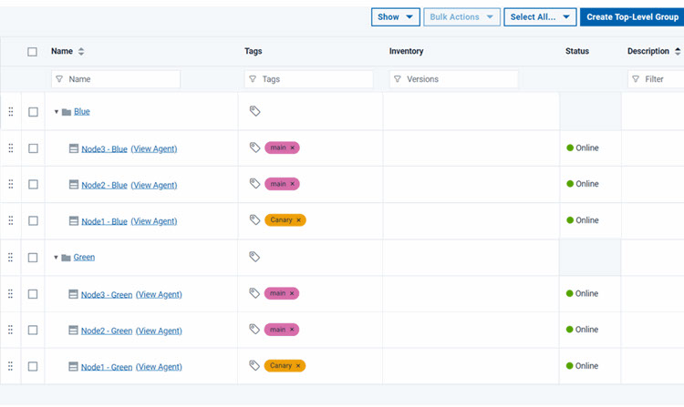
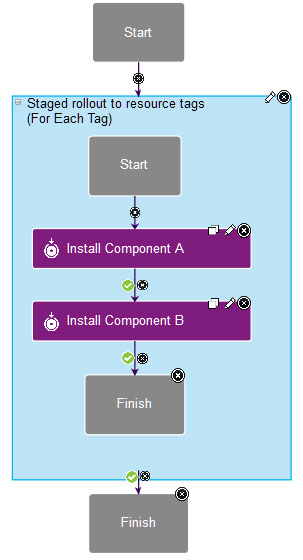
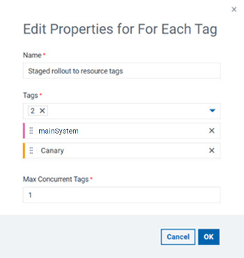
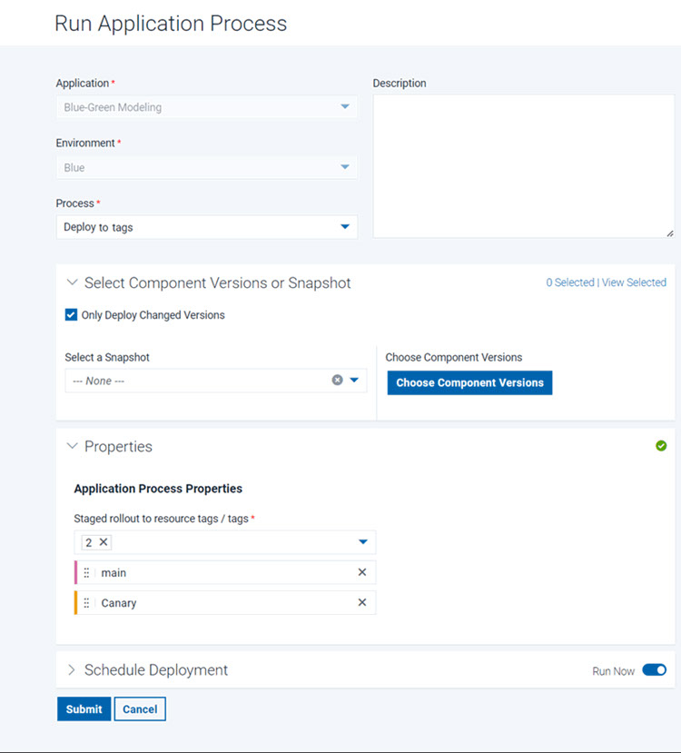
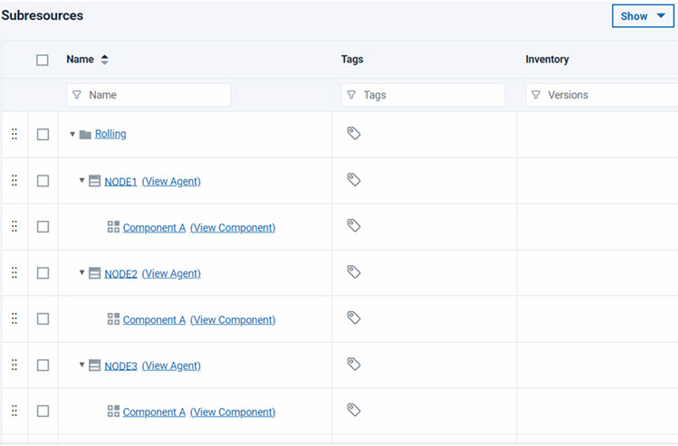
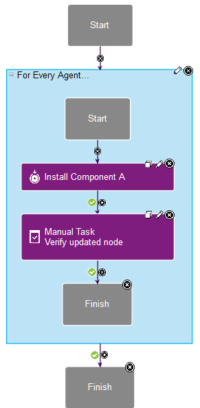
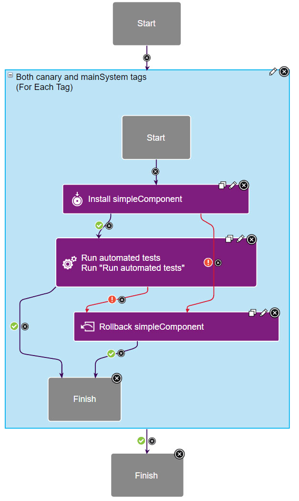
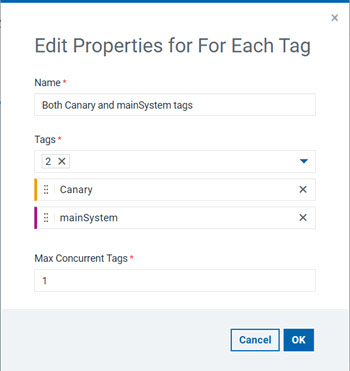

Modeling blue-green, rolling, and canary deployments
The For Each Agent and For Each Tag steps provide ways to deploy to large environments in stages, allowing you to run flexible blue-green or rolling deployments, with or without updating canary nodes first.
Two application process steps, the For Each Agent step and the For Each Tag step, provide flexible ways to deploy to multi-node environments in stages. You can use these steps to select subsets of agents and deploy to those subsets in specific orders. The following scenarios are just a few examples of how you can use these steps to control how deployments happen in multi-node environments.
Blue-green deployments
For a video demo of blue-green deployments, see Blue-green deployments with Deploy. For an article that covers a blue-green deployment scenario in detail, see Setting Up Blue-Green Deployments in Deploy.
Blue-green deployments use two identical environments. While clients are using one active environment, you can update the other environment without interrupting the active environment. Then, when the other environment is ready, you set a load balancer to send client traffic to the updated environment. Updating environments in this way allows for zero-downtime deployments and keeps a second working environment ready at all times in case anything goes wrong with the active environment.





There are many other ways to organize this type of deployment. For example, instead of using separate environments, you could use a single environment and tag the nodes Blue and Green with resource tags. How you organize your environments and apply resource tags to them depends on the order in which you want to update your nodes.
Rolling deployments


Canary deployments
Canary deployments are deployments that start by updating a single node or a subset of nodes. That way, you can test the update on a small subset of your system before you update every node. Canary deployments can be part of many other deployment scenarios. For example, the scenario in Setting Up Blue-Green Deployments in Deploy includes deployment to a canary node first.
All you need to do to use a canary node in your deployment is to pick one or a few nodes and make sure that you deploy to those nodes first. Then, you must run automated or manual tests to make sure that the canary node or nodes are working well with the new version.
canary to one node and the resource tag mainSystem to the other
nodes. The article shows several ways to use those tags, but a simple way is to use a For Each Tag
loop. This loop contains a simple sub-process that deploys the components and runs automated
tests:
In the properties of the loop, you select the tags and then set the order for those tags. In this case, the
canary tag runs first and the mainSystem tag runs
second: